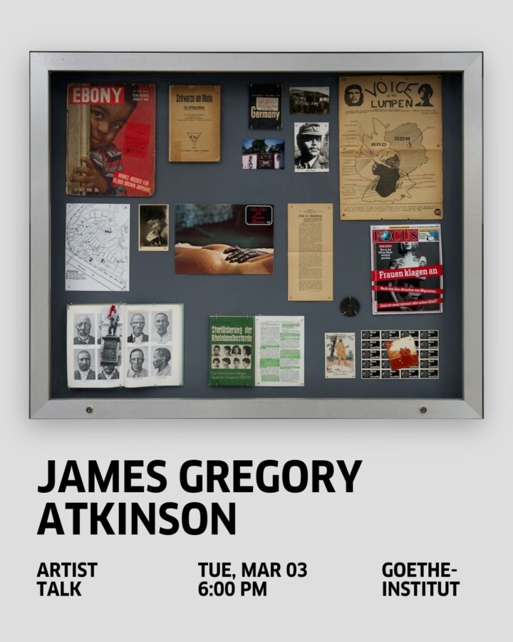

Artist Talk | James Gregory Atkinson
Join us for a talk by the Frankfurt-based artist James Gregory Atkinson, whose research-driven practice weaves social and political histories with autobiographical narratives to foreground Afro-German experiences.
Working across film, sound, installation, and performative practices, Atkinson reimagines memory as living and relational, opening spaces for critical reflection on race, identity, and nationality in Germany.
Atkinson’s exhibition ‘3 Lieder für Marie Nejar’ is currently on view at the Goethe-Institut New York, and he has previously exhibited at Dortmunder Kunstverein, PalaisPopulaire, Berlin, and Whitechapel Gallery, London.
After the talk, all are welcome to continue the conversation over pizza and salad. Free and open to the public, please register in advance via Eventbrite and bring photo ID for check-in. This program is supported by the Hessische Kulturstiftung and the Friends of Goethe New York.
ABOUT THE ARTIST
In his research-based exhibition projects, James Gregory Atkinson combines social and political history with autobiographical perspectives to examine the absence of Afro‑German experiences within established narratives of race, identity, and nationality in Germany. By integrating documents, objects, oral histories, bodies, places, and performative practices into a living, shared archive, he reimagines memory, experience, and knowledge as relational and dynamic, with each element functioning as a historical carrier. Situated within a lineage of post-conceptual artists, Atkinson approaches the archive as a site of self-determination and a locus for critiquing power, engaging communities and significant sites through participatory methods that bring historical and contemporary experiences into dialogue, reflecting their coexisting and interwoven temporalities.